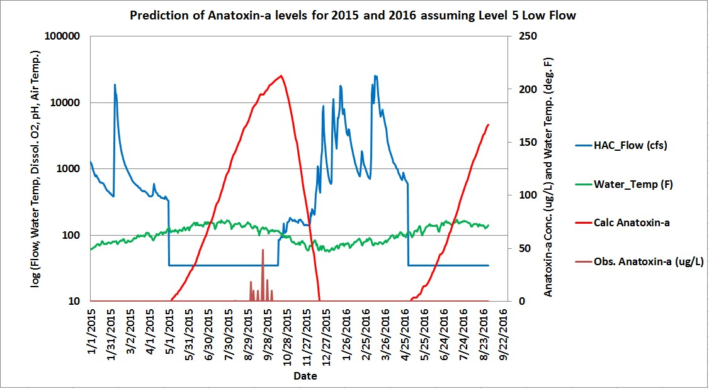

Click here for a daily updated graph of Predicted Anatoxin-a
by
Michael B. Bolger, Ph.D.
Summary
Sonoma County residents: Please don't let the Sonoma County Board of Supervisors (SCBOD) ignore this easily avoidable and potentially life-threatening Russian River blue-green algae related toxicity! Encourage your supervisor and the Sonoma County Water Agency (SCWA) to adopt adaptive management of Russian River flows. Let's use an advanced computer model to predict when to expect a bloom of blue-green algae and the subsequent increase in cyanotoxin levels, and then adjust the river flow to easily avoid the potential toxicity. The following graph shows the relationship between river flow, water temperature, and the observed and predicted anatoxin-a concentration for 2015 and 2016. The peak level of anatoxin-a measured in August of 2015 at the time that one of the dogs died was 48 ug/L (right axis) with a flow of ~50 cfs (left axis is log scale).
The next graph shows the predicted consequences of lower flows in the Russian River assuming that the river flow at Hacienda from May 1st to October 15th was reduced to a minimum of 35 cfs.
 As a consequence of the lower flow, the predicted levels of anatoxin-a rise up to 200 ug/L. This is a very toxic concentration and might result in sickness or death to children and adult humans.
My recommendation is for Sonoma County Residents to contact your supervisor and encourage them to instruct SCWA to utilize this type of simulation model to manage the Russian River flows when the conditions of flow, water temperature, and air temperature could give rise to this type of toxicity.
Background
The Sonoma County Board of Supervisors will be taking public input regarding the draft environmental impact report (EIR) released by the Sonoma County Water Agency (SCWA) until February 14, 2017. The 3602 page EIR was generated over the last seven years in response to a National Marine Fisheries Service published Biological Opinion (BO) dated Sept. 24, 2008 that proposed changes to the regulation of Russian River water flow in order to improve salmon and steelhead populations. In section 4.2-4 of the EIR, SCWA states that lower flow could have a significant but unavoidable impact on Russian River water quality due to the potential for proliferation of blue-green algae growth and release of cyanotoxins into the river. In August of 2015, these cyanotoxins were responsible for the death of a dog that drank contaminated river water between Healdsburg and the Wohler Bridge. There have been several other well documented dog deaths due to cyanotoxin pollution in Oregon and other locations in California over the last seven years. In the 3602 page EIR, the SCWA mentions cyanotoxins only twice and contends that this threat is unavoidable in part because there is no simulation model available for the Russian River that can adequately predict the growth of blue-green algae and cyanotoxin concentrations under a range of different river flows. Anatoxin-a is a neurotoxin that effects animals and humans in a way that is similar to the nerve gases discovered in Germany during World War II.Thanks, Mike
If you have questions, you can E-mail me at: labsoft@comcast.net
Traffic Counter